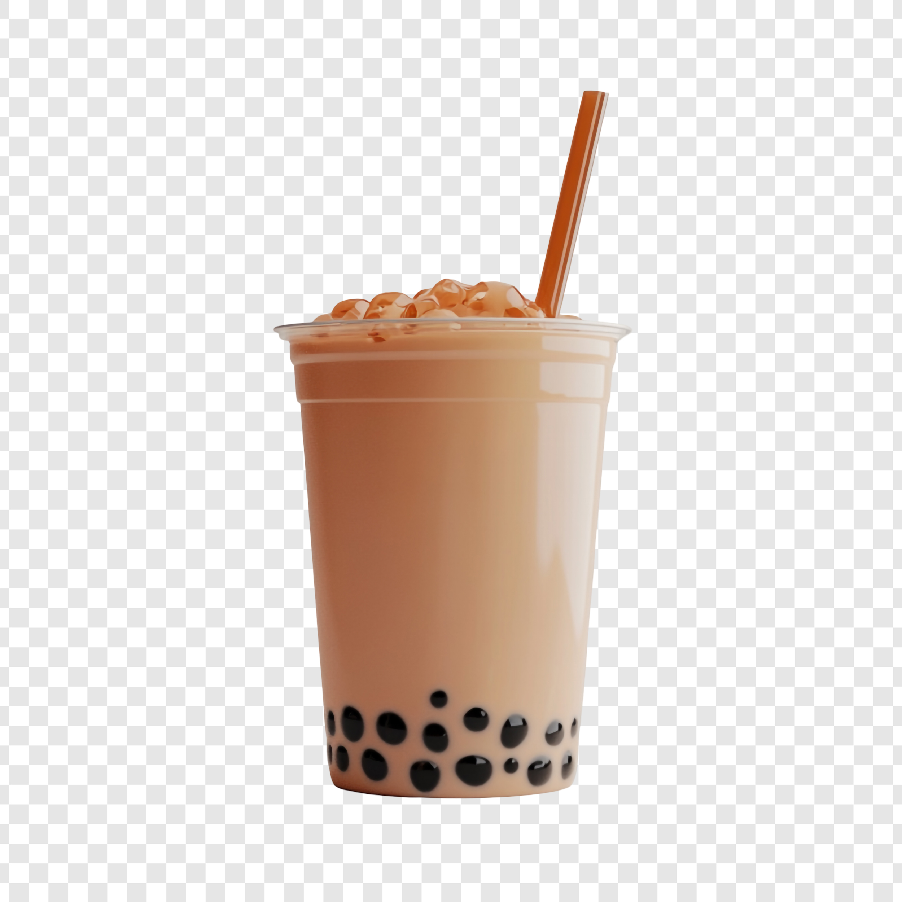

Bubble Tea is a refreshing, sweet drink made by brewing milk tea, fruit tea, or green tea and adding many things. You can add jelly, fruit, sweet syrups, and so much more. You then add black pearls made of tapioca to get the "bubbles".
Bubble tea originates from Taiwan in the '80s. While we cannot confirm where EXACTLY it came from. There are two likely tea houses where it originated.
